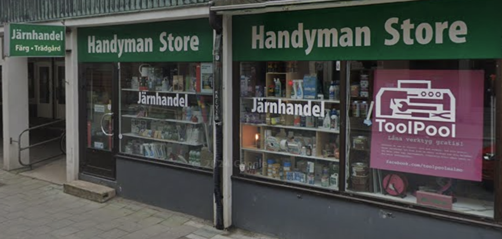

Sågen i Svensköp
Crowd-funding insamling
Vi har nu köpt sågen! Köpet gick igenom den 1 mars. Crowdfundingkampanjen fortsätter! Vi behöver fortfarande er hjälp att ersätta korttidslån (ljusrosa) med långtidslån innan den sista april. Så här ser det ut just nu:
- Mottagna donationer
- Utlovade donationer
- Mottagna lån
- Erbjudna lån
- Tillfälliga lån
- Saknas
Siffrorna uppdaterades senast 2024-03-08 kl 9. Vi behövde 1 240 000 SEK för köpet av Sågen. Vill nu ge ett stort tack till de ca 200 personer som donerat och till våra 18 långivare som gjorde köpet möjligt!
Eftersom ca 450 000 återstår som tillfälligt korttidslån kommer vi fortsätta crowdfundingen under våren för att täcka upp även denna del (ljusrosa) innan den 25 april 2024.
Sågen i Svensköp
Sågen är en gammal industrilokal i Svensköp (i Hörby kommun) som har blivit en jämlik och solidarisk plats för fri kultur.
Vi som driver Sågen har alla olika hantverksmässiga och kreativa kunskaper. Vi driver platsen tillsammans genom en ekonomisk förening, med våra egna verksamheter, med de ideella kulturföreningarna i lokalen och med stöd och engagemang från vår community runt Svensköp och Killhult. Vi har under åren byggt upp verkstäder med drivna företagare, en kulturförening med ett galleri, en scen, en nyöppnad Folkets Bio och en massa annat.

Köp av fastigheten
Vi är oerhört glada att vi äntligen ska få köpa Sågen, efter att ha hyrt lokalen sedan 2019. Vi kommer fortsätta driva Sågen gemensamt, med transparens och demokratiska beslut. Nu behöver vi er allas hjälp att få ihop så mycket pengar som möjligt till köpet samt kommande renoveringar!
Kontraktet skrivs på 1 februari och köpet kommer genomföras 1 mars 2024!
Fastigheten kommer att köpas och förvaltas av Toffelfabriken i Svensköp Ekonomiska Förening som är den förening som i hitentills har hyrt Sågen och vars styrelse består av de stadigvarande hyresgästerna i huset.
Vi behöver nu snabbt få ihop de 1 240 000 SEK som behövs för köpet (1 150 000 + 90 000 för lagfart).
Hjälp oss att nå målet! Tillsammans säkrar vi framtiden för fri kultur på Linderödsåsen!
Crowd-funding
Var med och stöd vårt köp av lokalen och bidra till en solidarisk plats på Linderödsåsen! Med start 24 januari 2024 tar vi emot donationer för att köpa Sågen.
Vi har valt att genomföra vår crowdfunding via Swish-donationer till Kulturföreningen Sågen. Kulturföreningen kommer i sin tur att donera till den ekonomiska föreningen som ska köpa och äga fastigheten. På detta sätt undiker vi administrationsavgifter och att en andel försvinner till crowdfundingtjänster. Maila oss gärna om du vill göra en större donation som banköverföring.
Swisha ditt bidrag till 123-334 57 17 och skriv "Donation till Sågen" i meddelandet.

Om du hellre vill göra en banköverföring, gör du det till bankgiro 5884-3970 med "Donation till Sågen" som meddelande.
Crowd-lending
Vi förväntar oss såklart inte att få in över en miljon i donationer. Vi söker därför även lån inom vårt community.
Har du möjlighet att låna ut belopp från 10 000 SEK under flera år för att göra detta möjligt? Berätta om dina möjligheter att låna ut till Sågens ekonomiska förening via vårt formulär så hör vi av oss till dig! Du kan också maila oss direkt på mailen som finns längst ner på sidan.
Dokument
Flyer om Sågen
Stadgar för Sågens ekonomisk förening: "Gamla Toffelfabriken i Svensköp Ekonomiska Förening"
Värdering av fastigheten som gjordes 2020 av den ekonomiska föreningen
Långivarkontrakt eller skuldebrev
Q&A
Här hittar du vanliga frågor och svar om:
Kontakt
Styrelsen till Sågens ekonomiska förening "Gamla Toffelfabriken Ekonomiska Förening" kan kontaktas på sagensvenskop @ gmail . com
Kulturföreningen nås på kulturforeningensagen @ gmail . com
Bio Sågen nås på biosagen @ gmail . com
This is a low-tech, minimalist, static site website without trackers, cookies or unnecessary code.